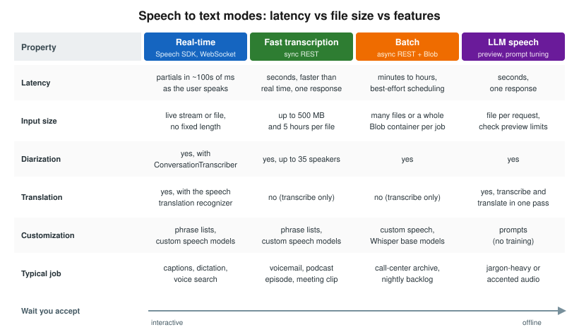

Speech to Text
|
This content was generated with the assistance of AI and should be verified against the official documentation before being relied on in production. |
This page targets Azure CLI 2.90.0, the speech to text REST API 2025-10-15 and Speech SDK 1.52.0
(azure-cognitiveservices-speech, Microsoft.CognitiveServices.Speech,
com.microsoft.cognitiveservices.speech:client-sdk), released in September 2026. The LLM speech SDKs
(azure-ai-transcription, Azure.AI.Speech.Transcription, com.azure:azure-ai-speech-transcription) are at 1.0.0.
Checked on 2026-10-06.
Azure Speech in Foundry Tools turns audio into text. It offers several modes that trade latency against file size and features. Choosing the right mode matters more than any other setting. The vendor-neutral background (streaming vs batch, accuracy factors, WER) is on Speech to Text. This page covers the Azure service.
The modes

| Mode | How it works | Choose it for |
|---|---|---|
Real-time |
Speech SDK streams audio over a WebSocket and returns partial and final results as the user speaks. Supports continuous recognition, phrase lists, language identification and multichannel audio. |
Live captions, dictation, voice commands, voice search. |
Fast transcription |
Synchronous REST call, |
Short to medium recordings where you can wait seconds, not minutes: voicemail, meeting snippets, podcast episodes. |
Batch transcription |
Asynchronous REST. Point the job at Blob URLs or a whole container, poll for status, read results from Blob. Best-effort scheduling, no SLA on start time. |
Large backlogs: call-center recordings, archives. |
LLM speech (preview) |
A large speech model with prompt tuning (for example MAI-Transcribe-2). Transcribe or translate in one pass. Uses the new Transcription SDKs. |
Hard audio (accents, jargon) where prompts help, or transcribe-and-translate jobs. |
Whisper / |
Whisper is available through Speech batch transcription. |
Noisy or mixed-language audio when you don’t need diarization or word-level features. |
Provisioning
In the Azure portal
-
Create the Foundry resource
foundry-bookshelfas shown on Resources, Endpoints and Authentication. -
Open the Foundry portal at
https://ai.azure.com, select the project, then Playgrounds → Speech playground to try real-time and fast transcription on a recording. -
For custom speech, open Fine-tuning → AI Service fine-tuning → Custom speech. Speech Studio (
https://speech.microsoft.com) still offers the same tools. -
Assign
Cognitive Services Speech User(orCognitive Services User) to the identity that calls the API.
With the Azure CLI
az cognitiveservices account show --name "$FOUNDRY" --resource-group "$RG" --query properties.endpoint -o tsv
az role assignment create \
--assignee "$(az identity show --name id-catalog-api --resource-group "$RG" --query principalId -o tsv)" \
--role "Cognitive Services Speech User" \
--scope "$(az cognitiveservices account show --name "$FOUNDRY" --resource-group "$RG" --query id -o tsv)"Real-time recognition with the Speech SDK
Continuous recognition from a WAV file, with a phrase list that boosts Bookshelf author names. The SDK uses the custom-subdomain endpoint and Entra ID.
import time
import azure.cognitiveservices.speech as speechsdk
from azure.identity import DefaultAzureCredential
speech_config = speechsdk.SpeechConfig(
endpoint="https://foundry-bookshelf.cognitiveservices.azure.com/",
token_credential=DefaultAzureCredential(),
)
speech_config.speech_recognition_language = "en-US"
audio_config = speechsdk.audio.AudioConfig(filename="voice-search.wav")
recognizer = speechsdk.SpeechRecognizer(speech_config=speech_config, audio_config=audio_config)
phrases = speechsdk.PhraseListGrammar.from_recognizer(recognizer)
for name in ["Ursula K. Le Guin", "Chimamanda Ngozi Adichie"]:
phrases.addPhrase(name)
done = False
def stop(evt):
global done
done = True
recognizer.recognized.connect(lambda evt: print("FINAL:", evt.result.text))
recognizer.session_stopped.connect(stop)
recognizer.canceled.connect(stop)
recognizer.start_continuous_recognition()
while not done:
time.sleep(0.5)
recognizer.stop_continuous_recognition()Source: How to recognize speech (Python)
using Azure.Identity;
using Microsoft.CognitiveServices.Speech;
using Microsoft.CognitiveServices.Speech.Audio;
var config = SpeechConfig.FromEndpoint(
new Uri("https://foundry-bookshelf.cognitiveservices.azure.com/"), new DefaultAzureCredential());
config.SpeechRecognitionLanguage = "en-US";
using var audio = AudioConfig.FromWavFileInput("voice-search.wav");
using var recognizer = new SpeechRecognizer(config, audio);
PhraseListGrammar.FromRecognizer(recognizer).AddPhrase("Ursula K. Le Guin");
var stopped = new TaskCompletionSource<int>();
recognizer.Recognized += (_, e) => Console.WriteLine($"FINAL: {e.Result.Text}");
recognizer.SessionStopped += (_, _) => stopped.TrySetResult(0);
recognizer.Canceled += (_, _) => stopped.TrySetResult(0);
await recognizer.StartContinuousRecognitionAsync();
await stopped.Task;
await recognizer.StopContinuousRecognitionAsync();Source: How to recognize speech (C#)
import com.azure.identity.DefaultAzureCredentialBuilder;
import com.microsoft.cognitiveservices.speech.*;
import com.microsoft.cognitiveservices.speech.audio.AudioConfig;
import java.net.URI;
SpeechConfig config = SpeechConfig.fromEndpoint(
new URI("https://foundry-bookshelf.cognitiveservices.azure.com/"),
new DefaultAzureCredentialBuilder().build());
config.setSpeechRecognitionLanguage("en-US");
try (AudioConfig audio = AudioConfig.fromWavFileInput("voice-search.wav");
SpeechRecognizer recognizer = new SpeechRecognizer(config, audio)) {
SpeechRecognitionResult result = recognizer.recognizeOnceAsync().get();
if (result.getReason() == ResultReason.RecognizedSpeech) {
System.out.println("FINAL: " + result.getText());
}
}Source: How to recognize speech (Java)
For language identification, pass an AutoDetectSourceLanguageConfig with up to 4 candidate languages at
start (or 10 in continuous mode). For multichannel audio (for example a stereo call recording with agent and
customer on separate channels), batch and fast transcription handle each channel separately.
Fast transcription
Fast transcription is REST-only. Send the audio and a JSON definition as multipart form data:
TOKEN=$(az account get-access-token --resource https://cognitiveservices.azure.com --query accessToken -o tsv)
curl -s -X POST \
"https://$FOUNDRY.cognitiveservices.azure.com/speechtotext/transcriptions:transcribe?api-version=2025-10-15" \
-H "Authorization: Bearer $TOKEN" \
-F "audio=@author-interview-042.mp3" \
-F 'definition={"locales":["en-US"],"diarization":{"enabled":true,"maxSpeakers":2},"profanityFilterMode":"Masked"}'Source: Use the fast transcription API
The response has combinedPhrases (the full transcript per channel) and phrases (each phrase with speaker,
offsetMilliseconds, durationMilliseconds, confidence and word timings).
Batch transcription
Batch transcription reads audio from Blob storage and writes results back. The Speech resource’s managed identity
needs Storage Blob Data Reader on stbookshelf, or you pass SAS URLs.
TRANSCRIPTION_URL=$(curl -s -X POST \
"https://$FOUNDRY.cognitiveservices.azure.com/speechtotext/transcriptions:submit?api-version=2025-10-15" \
-H "Authorization: Bearer $TOKEN" -H "Content-Type: application/json" \
-d '{
"displayName": "author-interviews-2026-10",
"locale": "en-US",
"contentContainerUrl": "https://stbookshelf.blob.core.windows.net/media",
"properties": {
"diarization": {"enabled": true, "maxSpeakers": 3},
"wordLevelTimestampsEnabled": true,
"timeToLiveHours": 48
}
}' | jq -r .self)
# Poll the "self" URL returned above until "status" is "Succeeded" (or "Failed")
while :; do
STATUS=$(curl -s "$TRANSCRIPTION_URL" -H "Authorization: Bearer $TOKEN" | jq -r .status)
[ "$STATUS" = "Succeeded" ] || [ "$STATUS" = "Failed" ] && break
sleep 30
done
curl -s "$TRANSCRIPTION_URL/files?api-version=2025-10-15" -H "Authorization: Bearer $TOKEN" \
| jq -r '.values[] | select(.kind=="Transcription") | .links.contentUrl'Source: Create a batch transcription
To use Whisper in batch, set "model": {"self": ".../models/base/<whisper-model-id>"} after listing base models
with GET /speechtotext/models/base.
LLM speech (preview)
LLM speech uses the Transcription client libraries. A prompt can steer spelling and formatting:
from azure.ai.transcription import TranscriptionClient
from azure.ai.transcription.models import TranscriptionContent, TranscriptionOptions
from azure.identity import DefaultAzureCredential
client = TranscriptionClient(
endpoint="https://foundry-bookshelf.cognitiveservices.azure.com/",
credential=DefaultAzureCredential(),
)
with open("author-interview-042.mp3", "rb") as audio:
result = client.transcribe(
TranscriptionContent(
definition=TranscriptionOptions(locales=["en-US"]),
audio=audio,
)
)
print(result.combined_phrases[0].text)Source: LLM speech
LLM speech is a preview feature with fewer languages and regions than the standard models. Check the release notes before you depend on it.
Diarization and conversation transcription
Diarization labels who spoke when (Guest-1, Guest-2 and so on). Batch and fast transcription do it on
files. For live audio, ConversationTranscriber in the Speech SDK returns a speaker_id with each result.
Speaker recognition (identifying a known person by voice) was retired on 2025-09-30. Diarization is not affected.
transcriber = speechsdk.transcription.ConversationTranscriber(
speech_config=speech_config, audio_config=audio_config
)
transcribing_done = False
def stop_transcribing(evt):
global transcribing_done
transcribing_done = True
transcriber.transcribed.connect(lambda evt: print(evt.result.speaker_id, evt.result.text))
transcriber.session_stopped.connect(stop_transcribing)
transcriber.canceled.connect(stop_transcribing)
transcriber.start_transcribing_async().get()
while not transcribing_done:
time.sleep(0.5)
transcriber.stop_transcribing_async().get()Source: Real-time diarization quickstart
Custom speech
Custom speech adapts the base model to your vocabulary and acoustics:
-
Plain text and structured text datasets teach domain words (titles, author names, product codes).
-
Pronunciation files map spoken forms to written forms.
-
Audio + human-labeled transcripts adapt to accents, noise or microphones.
You train a custom model, evaluate it against a held-out test set, and deploy an endpoint (billed per hour). The evaluation reports WER for the base and custom models side by side. The formula and how to read it are on Speech to Text — Word error rate.
Source: Custom speech overview
REST API versions and retirements
-
2025-10-15is the current speech to text REST API (batch, fast transcription, custom speech, LLM speech). -
2024-11-15is still supported. -
The v3.0 and v3.2 preview versions were retired on 2026-03-31. Move v3.x calls to
2025-10-15. The main change istranscriptions:submitinstead ofPOST /transcriptions.
Source: Speech to text REST API
Speech CLI
The Speech CLI (spx) is handy for quick tests and scripts:
dotnet tool install --global Microsoft.CognitiveServices.Speech.CLI
spx config @key --set "$SPEECH_KEY"
spx config @region --set eastus2
spx recognize --file voice-search.wav --language en-US --output file transcript.txtSource: Speech CLI overview
This is the key-based quickstart path. Applications should use Entra ID as shown above.
Use cases
| Scenario | Feature | Why this feature | Example input → output |
|---|---|---|---|
Bookshelf: transcribe author-interview podcasts for search |
Batch transcription with diarization |
Hundreds of hour-long episodes; no one waits for them; Blob in and out. |
|
Bookshelf: voice search in the catalog |
Real-time SDK with a phrase list |
Sub-second partial results; author names boosted. |
"books by Le Guin" spoken → |
Call-center post-call analytics |
Batch + diarization, then Language PII and an LLM summary |
Agent and customer separated; PII removed before storage. |
Stereo call → transcript per speaker → redacted summary |
Live captions for events |
Real-time continuous recognition |
Captions must keep up with the speaker. |
Keynote audio → caption stream on screen |
Meeting minutes |
Real-time |
Speakers separated, near-live; the summary turns the transcript into decisions and action items. |
Meeting recording → per-speaker transcript → minutes with action items |
Clinical dictation and notes |
Real-time with custom speech, then Text Analytics for health |
Medical vocabulary; structured output. |
Doctor’s dictation → note → FHIR bundle |
Subtitles for video |
Fast transcription with word timestamps |
One call per file; timings for SRT/VTT. |
40-minute MP4 audio → WebVTT file |
When not to use it
-
For a live voice agent that listens, thinks and talks back, use Voice Live instead of wiring STT, an LLM and TTS yourself.
-
For audio where you want a summary and fields rather than a transcript, consider Content Understanding’s audio analyzers (Content Understanding: Multimodal Analyzers).
-
For short, noisy, mixed-language clips with no need for diarization, a
gpt-transcribeFoundry Model may be simpler. See Choosing a Foundry Tool (or a Foundry Model).
Clean up
curl -s -X DELETE "$TRANSCRIPTION_URL" -H "Authorization: Bearer $TOKEN"
az storage blob delete-batch --account-name stbookshelf --source media --pattern "interview-*" --auth-mode loginSource: Get batch transcription results
Related pages
-
Speech to Text compares STT providers and explains WER.
-
Speech Translation, Pronunciation Assessment and Other Speech Features covers speech translation and language identification in more depth.
-
Language: PII, Entities, Language Detection and Health covers PII redaction of transcripts.
-
Blob Storage covers
stbookshelfand its containers.